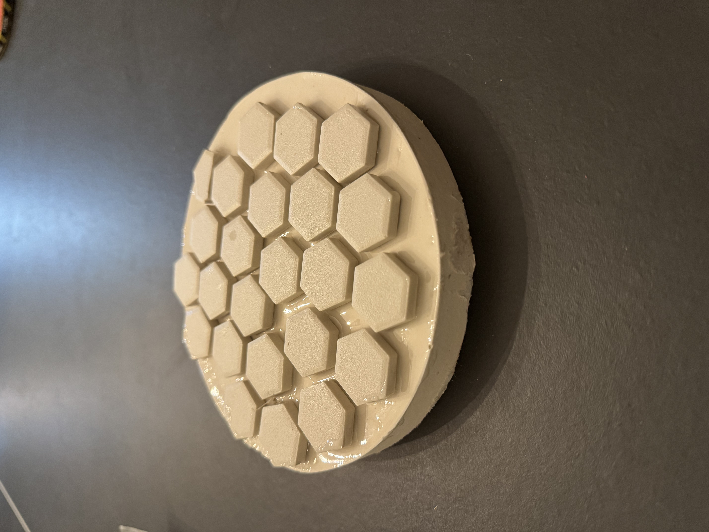

Eos
Overview
Eos is a 6in f/10 truss dobsonian telescope. It is my first telescope of my own design, and currently still a work in progress.
Mirror Grinding
Grinding your own mirror is one way to guarantee any optical defects are your fault and not the manufacturer's. Aside from large cracks or bubbles in the glass, you can grind and polish your mirror to an unparalleled (without some serious money) surface. It is well within the limits of a personally finished mirror to be within a PV of 1/20 wave. It is certainly possible to get better, but beyond that the human eye can't tell much of a difference. Sophisticated equipment can test to a much higher degree, 1/50 or higher. 1/10 is generally considered "good" or "high quality optics", and 1/4 is generally the absolute minimum (or maybe maximum?) you want for your mirror as that is a diffraction limited mirror, per the Rayleigh criterion.
I sourced my mirror blanks in April of 2024 from a man in Austin who had originally bought them with the intention of making his own telescope. Life got busy and he didn't get around to it, so I purchased them from his ad on astromart. He gave me a 6-inch pyrex blank from firsthanddiscovery.com, as well as the 6-inch kit he had purchased for it. I also bought from him an 8-inch blank.
Starting is often the hardest part. It is difficult as a broke college student to muster the courage to deface and grind away on something you spent a considerable amount of money on. The risk of ruining the mirror was a horror that kept me away for far too long. The mirror blanks sat untouched in my closet for almost a year before I started working on them in February of 2025. Many people recommend working on a round, belly high table. Some recommend even old barrels or turntables. My roommate at the time had made a woodworking bench over a year prior, and had since moved on to bigger and better benches (aka power tools). He gave it to me to do my mirror grinding, but still I waited. He threatened to burn it if I didn't use it, and thus began my mirror journey.
I began by making a tile tool. I used the tried and true method documented by Stellafane, and certainly won't bore with that here. I used Bob Smith epoxy (a little too much) and it was a bit tacky in some spots. It could have been from the temperature, as it is recommended to cure at 70 fahrenheit or above, and it was a cool 68. However I believe it was a mixture of too much epoxy and poor mixing of the epoxy. After making my tool I finally began rough grinding. I exclusively used mirror on top (MOT) for this, and only used silicon carbide #80. Because my focal ratio was so high I had to grind very little, and all in all I only ended up working for about 90 minutes before I had even surpassed my sagitta!
Before I began fine grinding I took on the arduous but necessary task of cleaning the #80 grit off of my tool, mirror, and workspace. However when I was cleaning I noticed the grit had completely adhered to the tacky epoxy of my first tool. Unfortunately this meant I could absolutely not use this tool for fine grinding. I made a second tool and much more thoroughly mixed the epoxy this time, as well as a much thinner coat. It is miles better, and goes to show the only way to learn is to do.
Design
Before I started fine grinding I decided to at least have a fairly good idea of what I wanted the telescope to look like. I began by looking for something to be the tube of the telescope. Originally I had planned to use concrete form tubes (sonotubes), however these come in standard sizes that did not suit my focal length of 60". Eventually I decided that I would use a truss design, as it complements the visual, weight, and collapsible needs I had envisioned. I travel very frequently by car and need to be able to pack it efficiently. After that, I began the most stressful part of the design: the primary mirror cell.

The mirror cell gave me many headaches. I have spent many hours staring into the soul of this solidworks creation (my third one ever) to make it suit my needs and hopefully not mess up too many times. I finally settled on a design that took some inspiration from a mirror cell @hillexed had done for his Leavitt telescope. Similar to their's I decided to have seperately printed vertical support, and as someone cleverly mentioned in the atm discord, I used the xy-precision of a 3d printer to only hold on to the bevel of my mirror.